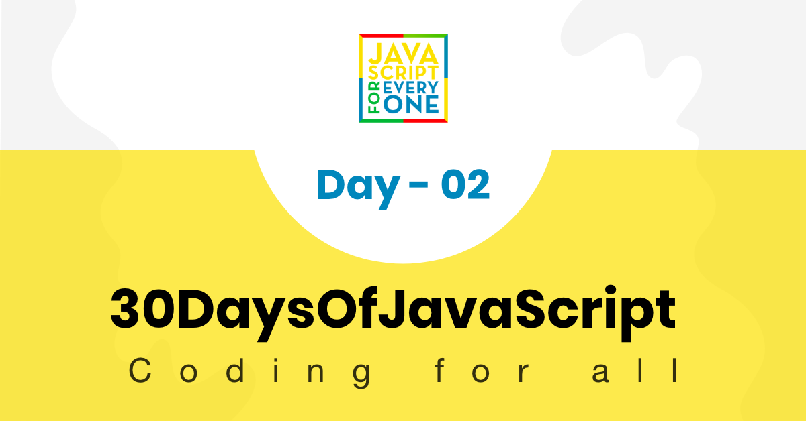

In the previous section, we mentioned a little bit about data types. Data or values have data types. Data types describe the characteristics of data. Data types can be divided into two:
Primitive data types in JavaScript include:
Non-primitive data types in JavaScript includes:
Now, let us see what exactly primitive and non-primitive data types mean. Primitive data types are immutable(non-modifiable) data types. Once a primitive data type is created we cannot modify it.
Example:
let word = 'JavaScript'
If we try to modify the string stored in variable word, JavaScript should raise an error. Any data type under a single quote, double quote, or backtick quote is a string data type.
word[0] = 'Y'
This expression does not change the string stored in the variable word. So, we can say that strings are not modifiable or in other words immutable. Primitive data types are compared by its values. Let us compare different data values. See the example below:
let numOne = 3
let numTwo = 3
console.log(numOne == numTwo) // true
let js = 'JavaScript'
let py = 'Python'
console.log(js == py) //false
let lightOn = true
let lightOff = false
console.log(lightOn == lightOff) // false
Non-primitive data types are modifiable or mutable. We can modify the value of non-primitive data types after it gets created. Let us see by creating an array. An array is a list of data values in a square bracket. Arrays can contain the same or different data types. Array values are referenced by their index. In JavaScript array index starts at zero. I.e., the first element of an array is found at index zero, the second element at index one, and the third element at index two, etc.
let nums = [1, 2, 3]
nums[0] = 10
console.log(nums) // [10, 2, 3]
As you can see, an array, which is a non-primitive data type is mutable. Non-primitive data types cannot be compared by value. Even if two non-primitive data types have the same properties and values, they are not strictly equal.
let nums = [1, 2, 3]
let numbers = [1, 2, 3]
console.log(nums == numbers) // false
let userOne = {
name:'Asabeneh',
role:'teaching',
country:'Finland'
}
let userTwo = {
name:'Asabeneh',
role:'teaching',
country:'Finland'
}
console.log(userOne == userTwo) // false
Rule of thumb, we do not compare non-primitive data types. Do not compare arrays, functions, or objects. Non-primitive values are referred to as reference types, because they are being compared by reference instead of value. Two objects are only strictly equal if they refer to the same underlying object.
let nums = [1, 2, 3]
let numbers = nums
console.log(nums == numbers) // true
let userOne = {
name:'Asabeneh',
role:'teaching',
country:'Finland'
}
let userTwo = userOne
console.log(userOne == userTwo) // true
If you have a hard time understanding the difference between primitive data types and non-primitive data types, you are not the only one. Calm down and just go to the next section and try to come back after some time. Now let us start the data types by number type.
Numbers are integers and decimal values which can do all the arithmetic operations. Let's see some examples of Numbers.
let age = 35
const gravity = 9.81 // we use const for non-changing values, gravitational constant in m/s2
let mass = 72 // mass in Kilogram
const PI = 3.14 // pi a geometrical constant
// More Examples
const boilingPoint = 100 // temperature in oC, boiling point of water which is a constant
const bodyTemp = 37 // oC average human body temperature, which is a constant
console.log(age, gravity, mass, PI, boilingPoint, bodyTemp)
In JavaScript the Math Object provides a lots of methods to work with numbers.
const PI = Math.PI
console.log(PI) // 3.141592653589793
// Rounding to the closest number
// if above .5 up if less 0.5 down rounding
console.log(Math.round(PI)) // 3 to round values to the nearest number
console.log(Math.round(9.81)) // 10
console.log(Math.floor(PI)) // 3 rounding down
console.log(Math.ceil(PI)) // 4 rounding up
console.log(Math.min(-5, 3, 20, 4, 5, 10)) // -5, returns the minimum value
console.log(Math.max(-5, 3, 20, 4, 5, 10)) // 20, returns the maximum value
const randNum = Math.random() // creates random number between 0 to 0.999999
console.log(randNum)
// Let us create random number between 0 to 10
const num = Math.floor(Math.random () * 11) // creates random number between 0 and 10
console.log(num)
//Absolute value
console.log(Math.abs(-10)) // 10
//Square root
console.log(Math.sqrt(100)) // 10
console.log(Math.sqrt(2)) // 1.4142135623730951
// Power
console.log(Math.pow(3, 2)) // 9
console.log(Math.E) // 2.718
// Logarithm
// Returns the natural logarithm with base E of x, Math.log(x)
console.log(Math.log(2)) // 0.6931471805599453
console.log(Math.log(10)) // 2.302585092994046
// Returns the natural logarithm of 2 and 10 respectively
console.log(Math.LN2) // 0.6931471805599453
console.log(Math.LN10) // 2.302585092994046
// Trigonometry
Math.sin(0)
Math.sin(60)
Math.cos(0)
Math.cos(60)
The JavaScript Math Object has a random() method number generator which generates number from 0 to 0.999999999...
let randomNum = Math.random() // generates 0 to 0.999...
Now, let us see how we can use random() method to generate a random number between 0 and 10:
let randomNum = Math.random() // generates 0 to 0.999
let numBtnZeroAndTen = randomNum * 11
console.log(numBtnZeroAndTen) // this gives: min 0 and max 10.99
let randomNumRoundToFloor = Math.floor(numBtnZeroAndTen)
console.log(randomNumRoundToFloor) // this gives between 0 and 10
Strings are texts, which are under single , double, back-tick quote. To declare a string, we need a variable name, assignment operator, a value under a single quote, double quote, or backtick quote. Let's see some examples of strings:
let space = ' ' // an empty space string
let firstName = 'Asabeneh'
let lastName = 'Yetayeh'
let country = 'Finland'
let city = 'Helsinki'
let language = 'JavaScript'
let job = 'teacher'
let quote = "The saying,'Seeing is Believing' is not correct in 2020."
let quotWithBackTick = `The saying,'Seeing is Believing' is not correct in 2020.`
Connecting two or more strings together is called concatenation. Using the strings declared in the previous String section:
let fullName = firstName + space + lastName; // concatenation, merging two string together.
console.log(fullName);
Asabeneh Yetayeh
We can concatenate strings in different ways.
Concatenating using the addition operator is an old way. This way of concatenating is tedious and error-prone. It is good to know how to concatenate this way, but I strongly suggest to use the ES6 template strings (explained later on).
// Declaring different variables of different data types
let space = ' '
let firstName = 'Asabeneh'
let lastName = 'Yetayeh'
let country = 'Finland'
let city = 'Helsinki'
let language = 'JavaScript'
let job = 'teacher'
let age = 250
let fullName =firstName + space + lastName
let personInfoOne = fullName + '. I am ' + age + '. I live in ' + country; // ES5 string addition
console.log(personInfoOne)
Asabeneh Yetayeh. I am 250. I live in Finland
A string could be a single character or paragraph or a page. If the string length is too big it does not fit in one line. We can use the backslash character (\) at the end of each line to indicate that the string will continue on the next line. Example:
const paragraph = "My name is Asabeneh Yetayeh. I live in Finland, Helsinki.\
I am a teacher and I love teaching. I teach HTML, CSS, JavaScript, React, Redux, \
Node.js, Python, Data Analysis and D3.js for anyone who is interested to learn. \
In the end of 2019, I was thinking to expand my teaching and to reach \
to global audience and I started a Python challenge from November 20 - December 19.\
It was one of the most rewarding and inspiring experience.\
Now, we are in 2020. I am enjoying preparing the 30DaysOfJavaScript challenge and \
I hope you are enjoying too."
console.log(paragraph)
In JavaScript and other programming languages \ followed by some characters is an escape sequence. Let's see the most common escape characters:
console.log('I hope everyone is enjoying the 30 Days Of JavaScript challenge.\nDo you ?') // line break
console.log('Days\tTopics\tExercises')
console.log('Day 1\t3\t5')
console.log('Day 2\t3\t5')
console.log('Day 3\t3\t5')
console.log('Day 4\t3\t5')
console.log('This is a backslash symbol (\\)') // To write a backslash
console.log('In every programming language it starts with \"Hello, World!\"')
console.log("In every programming language it starts with \'Hello, World!\'")
console.log('The saying \'Seeing is Believing\' isn\'t correct in 2020')
Output in console:
I hope everyone is enjoying the 30 Days Of JavaScript challenge.
Do you ?
Days Topics Exercises
Day 1 3 5
Day 2 3 5
Day 3 3 5
Day 4 3 5
This is a backslash symbol (\)
In every programming language it starts with "Hello, World!"
In every programming language it starts with 'Hello, World!'
The saying 'Seeing is Believing' isn't correct in 2020
To create a template strings, we use two back-ticks. We can inject data as expressions inside a template string. To inject data, we enclose the expression with a curly bracket({}) preceded by a $ sign. See the syntax below.
//Syntax
`String literal text`
`String literal text ${expression}`
Example: 1
console.log(`The sum of 2 and 3 is 5`) // statically writing the data
let a = 2
let b = 3
console.log(`The sum of ${a} and ${b} is ${a + b}`) // injecting the data dynamically
Example:2
let firstName = 'Asabeneh'
let lastName = 'Yetayeh'
let country = 'Finland'
let city = 'Helsinki'
let language = 'JavaScript'
let job = 'teacher'
let age = 250
let fullName = firstName + ' ' + lastName
let personInfoTwo = `I am ${fullName}. I am ${age}. I live in ${country}.` //ES6 - String interpolation method
let personInfoThree = `I am ${fullName}. I live in ${city}, ${country}. I am a ${job}. I teach ${language}.`
console.log(personInfoTwo)
console.log(personInfoThree)
I am Asabeneh Yetayeh. I am 250. I live in Finland.
I am Asabeneh Yetayeh. I live in Helsinki, Finland. I am a teacher. I teach JavaScript.
Using a string template or string interpolation method, we can add expressions, which could be a value, or some operations (comparison, arithmetic operations, ternary operation).
let a = 2
let b = 3
console.log(`${a} is greater than ${b}: ${a > b}`)
2 is greater than 3: false
Everything in JavaScript is an object. A string is a primitive data type that means we can not modify it once it is created. The string object has many string methods. There are different string methods that can help us to work with strings.
Example:
let js = 'JavaScript'
console.log(js.length) // 10
let firstName = 'Asabeneh'
console.log(firstName.length) // 8
Let us access different characters in 'JavaScript' string.
let string = 'JavaScript'
let firstLetter = string[0]
console.log(firstLetter) // J
let secondLetter = string[1] // a
let thirdLetter = string[2]
let lastLetter = string[9]
console.log(lastLetter) // t
let lastIndex = string.length - 1
console.log(lastIndex) // 9
console.log(string[lastIndex]) // t
let string = 'JavaScript'
console.log(string.toUpperCase()) // JAVASCRIPT
let firstName = 'Asabeneh'
console.log(firstName.toUpperCase()) // ASABENEH
let country = 'Finland'
console.log(country.toUpperCase()) // FINLAND
let string = 'JavasCript'
console.log(string.toLowerCase()) // javascript
let firstName = 'Asabeneh'
console.log(firstName.toLowerCase()) // asabeneh
let country = 'Finland'
console.log(country.toLowerCase()) // finland
let string = 'JavaScript'
console.log(string.substr(4,6)) // Script
let country = 'Finland'
console.log(country.substr(3, 4)) // land
let string = 'JavaScript'
console.log(string.substring(0,4)) // Java
console.log(string.substring(4,10)) // Script
console.log(string.substring(4)) // Script
let country = 'Finland'
console.log(country.substring(0, 3)) // Fin
console.log(country.substring(3, 7)) // land
console.log(country.substring(3)) // land
let string = '30 Days Of JavaScript'
console.log(string.split()) // Changes to an array -> ["30 Days Of JavaScript"]
console.log(string.split(' ')) // Split to an array at space -> ["30", "Days", "Of", "JavaScript"]
let firstName = 'Asabeneh'
console.log(firstName.split()) // Change to an array - > ["Asabeneh"]
console.log(firstName.split('')) // Split to an array at each letter -> ["A", "s", "a", "b", "e", "n", "e", "h"]
let countries = 'Finland, Sweden, Norway, Denmark, and Iceland'
console.log(countries.split(',')) // split to any array at comma -> ["Finland", " Sweden", " Norway", " Denmark", " and Iceland"]
console.log(countries.split(', ')) // Â ["Finland", "Sweden", "Norway", "Denmark", "and Iceland"]
let string = ' 30 Days Of JavaScript '
console.log(string)
console.log(string.trim(' '))
let firstName = ' Asabeneh '
console.log(firstName)
console.log(firstName.trim()) // still removes spaces at the beginning and the end of the string
30 Days Of JavasCript
30 Days Of JavasCript
Asabeneh
Asabeneh
let string = '30 Days Of JavaScript'
console.log(string.includes('Days')) // true
console.log(string.includes('days')) // false - it is case sensitive!
console.log(string.includes('Script')) // true
console.log(string.includes('script')) // false
console.log(string.includes('java')) // false
console.log(string.includes('Java')) // true
let country = 'Finland'
console.log(country.includes('fin')) // false
console.log(country.includes('Fin')) // true
console.log(country.includes('land')) // true
console.log(country.includes('Land')) // false
string.replace(oldsubstring, newsubstring)
let string = '30 Days Of JavaScript'
console.log(string.replace('JavaScript', 'Python')) // 30 Days Of Python
let country = 'Finland'
console.log(country.replace('Fin', 'Noman')) // Nomanland
string.charAt(index)
let string = '30 Days Of JavaScript'
console.log(string.charAt(0)) // 3
let lastIndex = string.length - 1
console.log(string.charAt(lastIndex)) // t
string.charCodeAt(index)
let string = '30 Days Of JavaScript'
console.log(string.charCodeAt(3)) // D ASCII number is 68
let lastIndex = string.length - 1
console.log(string.charCodeAt(lastIndex)) // t ASCII is 116
string.indexOf(substring)
let string = '30 Days Of JavaScript'
console.log(string.indexOf('D')) // 3
console.log(string.indexOf('Days')) // 3
console.log(string.indexOf('days')) // -1
console.log(string.indexOf('a')) // 4
console.log(string.indexOf('JavaScript')) // 11
console.log(string.indexOf('Script')) //15
console.log(string.indexOf('script')) // -1
//syntax
string.lastIndexOf(substring)
let string = 'I love JavaScript. If you do not love JavaScript what else can you love.'
console.log(string.lastIndexOf('love')) // 67
console.log(string.lastIndexOf('you')) // 63
console.log(string.lastIndexOf('JavaScript')) // 38
string.concat(substring, substring, substring)
let string = '30'
console.log(string.concat("Days", "Of", "JavaScript")) // 30DaysOfJavaScript
let country = 'Fin'
console.log(country.concat("land")) // Finland
//syntax
string.startsWith(substring)
let string = 'Love is the best to in this world'
console.log(string.startsWith('Love')) // true
console.log(string.startsWith('love')) // false
console.log(string.startsWith('world')) // false
let country = 'Finland'
console.log(country.startsWith('Fin')) // true
console.log(country.startsWith('fin')) // false
console.log(country.startsWith('land')) // false
string.endsWith(substring)
let string = 'Love is the most powerful feeling in the world'
console.log(string.endsWith('world')) // true
console.log(string.endsWith('love')) // false
console.log(string.endsWith('in the world')) // true
let country = 'Finland'
console.log(country.endsWith('land')) // true
console.log(country.endsWith('fin')) // false
console.log(country.endsWith('Fin')) // false
string.search(substring)
let string = 'I love JavaScript. If you do not love JavaScript what else can you love.'
console.log(string.search('love')) // 2
console.log(string.search(/javascript/gi)) // 7
let string = 'love'
let patternOne = /love/ // with out any flag
let patternTwo = /love/gi // g-means to search in the whole text, i - case insensitive
Match syntax
// syntax
string.match(substring)
let string = 'I love JavaScript. If you do not love JavaScript what else can you love.'
console.log(string.match('love'))
["love", index: 2, input: "I love JavaScript. If you do not love JavaScript what else can you love.", groups: undefined]
let pattern = /love/gi
console.log(string.match(pattern)) // ["love", "love", "love"]
Let us extract numbers from text using a regular expression. This is not the regular expression section, do not panic! We will cover regular expressions later on.
let txt = 'In 2019, I ran 30 Days of Python. Now, in 2020 I am super exited to start this challenge'
let regEx = /\d+/
// d with escape character means d not a normal d instead acts a digit
// + means one or more digit numbers,
// if there is g after that it means global, search everywhere.
console.log(txt.match(regEx)) // ["2", "0", "1", "9", "3", "0", "2", "0", "2", "0"]
console.log(txt.match(/\d+/g)) // ["2019", "30", "2020"]
string.repeat(n)
let string = 'love'
console.log(string.repeat(10)) // lovelovelovelovelovelovelovelovelovelove
To check the data type of a certain variable we use the typeof method.
Example:
// Different javascript data types
// Let's declare different data types
let firstName = 'Asabeneh' // string
let lastName = 'Yetayeh' // string
let country = 'Finland' // string
let city = 'Helsinki' // string
let age = 250 // number, it is not my real age, do not worry about it
let job // undefined, because a value was not assigned
console.log(typeof 'Asabeneh') // string
console.log(typeof firstName) // string
console.log(typeof 10) // number
console.log(typeof 3.14) // number
console.log(typeof true) // boolean
console.log(typeof false) // boolean
console.log(typeof NaN) // number
console.log(typeof job) // undefined
console.log(typeof undefined) // undefined
console.log(typeof null) // object
We can convert string number to a number. Any number inside a quote is a string number. An example of a string number: '10', '5', etc. We can convert string to number using the following methods:
let num = '10'
let numInt = parseInt(num)
console.log(numInt) // 10
let num = '10'
let numInt = Number(num)
console.log(numInt) // 10
let num = '10'
let numInt = +num
console.log(numInt) // 10
We can convert string float number to a float number. Any float number inside a quote is a string float number. An example of a string float number: '9.81', '3.14', '1.44', etc. We can convert string float to number using the following methods:
let num = '9.81'
let numFloat = parseFloat(num)
console.log(numFloat) // 9.81
let num = '9.81'
let numFloat = Number(num)
console.log(numFloat) // 9.81
let num = '9.81'
let numFloat = +num
console.log(numFloat) // 9.81
We can convert float numbers to integers. We use the following method to convert float to int:
let num = 9.81
let numInt = parseInt(num)
console.log(numInt) // 9
🌕 You are awesome. You have just completed day 2 challenges and you are two steps ahead on your way to greatness. Now do some exercises for your brain and for your muscle.
Using console.log() print out the following statement:
The quote 'There is no exercise better for the heart than reaching down and lifting people up.' by John Holmes teaches us to help one another.
Using console.log() print out the following quote by Mother Teresa:
"Love is not patronizing and charity isn't about pity, it is about love. Charity and love are the same -- with charity you give love, so don't just give money but reach out your hand instead."
Check if typeof '10' is exactly equal to 10. If not make it exactly equal.
Check if parseFloat('9.8') is equal to 10 if not make it exactly equal with 10.
Check if 'on' is found in both python and jargon
I hope this course is not full of jargon. Check if jargon is in the sentence.
Generate a random number between 0 and 100 inclusively.
Generate a random number between 50 and 100 inclusively.
Generate a random number between 0 and 255 inclusively.
Access the 'JavaScript' string characters using a random number.
Use console.log() and escape characters to print the following pattern.
1 1 1 1 1
2 1 2 4 8
3 1 3 9 27
4 1 4 16 64
5 1 5 25 125
Use substr to slice out the phrase because because because from the following sentence:'You cannot end a sentence with because because because is a conjunction'
'Love is the best thing in this world. Some found their love and some are still looking for their love.' Count the number of word love in this sentence.
Use match() to count the number of all because in the following sentence:'You cannot end a sentence with because because because is a conjunction'
Clean the following text and find the most frequent word (hint, use replace and regular expressions).
const sentence = '%I $am@% a %tea@cher%, &and& I lo%#ve %te@a@ching%;. The@re $is no@th@ing; &as& mo@re rewarding as educa@ting &and& @emp%o@weri@ng peo@ple. ;I found tea@ching m%o@re interesting tha@n any ot#her %jo@bs. %Do@es thi%s mo@tiv#ate yo@u to be a tea@cher!? %Th#is 30#Days&OfJavaScript &is al@so $the $resu@lt of &love& of tea&ching'
Calculate the total annual income of the person by extracting the numbers from the following text. 'He earns 5000 euro from salary per month, 10000 euro annual bonus, 15000 euro online courses per month.'
🎉 CONGRATULATIONS ! 🎉